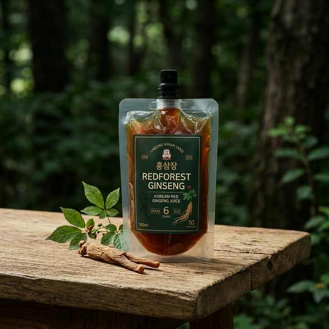
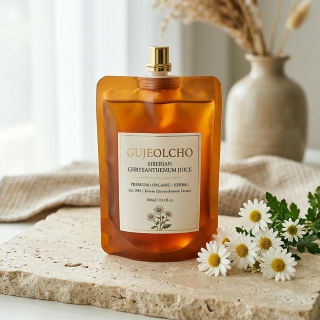

진심성
판매를 위해 급조된 것이 아닙니다. 오직 사랑하는 가족이 먹기 위해 시작된 진심 어린 정성과 보살핌입니다.
Brand Story
자연 그대로의 정직한 이야기. 현대 사회는 건강에 대한 관심이 지속적으로 증가하며 자연식품과 전통 약초에 대한 수요가 빠르게 확대되고 있습니다. 하지만 기존 건강즙 시장은 대량 생산 라인에 의존하여 원료의 출처와 생산 과정의 투명성에 한계를 가지고 있습니다.
삼초담은 이러한 시장의 한계를 극복하고자, "직접 재배 → 직접 가공 → 직접 전달"의 구조를 통해 투명하고 정직한 건강 브랜드를 구축했습니다. 상업적 목적이 아닌 가족의 건강을 위해 시작된 진심, 가장 좋은 것을 주변 사람들과 나누는 과정 속에서 자연스럽게 확장된 믿음의 브랜드입니다.
Core Values
가족이 먹는다는 생각으로 타협하지 않는 삼초담의 핵심 가치
판매를 위해 급조된 것이 아닙니다. 오직 사랑하는 가족이 먹기 위해 시작된 진심 어린 정성과 보살핌입니다.
아무 원료나 쓰지 않습니다. 금산 지역에서 저희가 직접 땀 흘리며 재배한 믿을 수 있는 원료만을 오롯이 사용합니다.
인위적인 것을 배제합니다. 자연 그대로의 재배 방식과 원재료의 영양을 보존하는 최소한의 가공을 원칙으로 합니다.
혼자만 알기 아까운 좋은 것을 함께 나누고자 하는, 관계 중심의 따뜻하고 건강한 브랜드 철학을 지향합니다.
Products
금산의 깨끗한 자연과 정성스런 기다림이 빚어낸 두 가지 건강

자연에서 자란 원료를 정직하게 담았습니다
금산의 질 좋은 인삼으로 제조한 홍삼만을 엄선하여 정성껏 달였습니다. 첨가물 없이 홍삼 고유의 진한 풍미를 그대로 담아내어 바쁜 일상 속, 균형을 위한 따뜻한 선택이 되어드립니다. 부모님께 드리는 최고의 선물입니다.

어머니의 지혜, 자연의 편안함
가을 산기슭을 수놓는 아홉 마디의 약초, 구절초. 여성의 건강과 몸의 따뜻함을 돕는 전통적인 지혜를 오롯이 담아, 부드럽고 쌉싸름한 자연의 맛을 정직하게 추출했습니다. 마음을 편안하게 해주는 깊은 맛을 느껴보세요.
FAQ
고객센터의 주문 접수 폼에서 이름, 연락처, 제품, 수량을 남기면 관리자 모드에서 바로 주문 내역을 확인할 수 있습니다.
고객센터의 신청내역/배송조회 영역에서 주문번호와 연락처를 남기면 Formspree로 문의가 접수됩니다.
무통장 입금은 주문자명과 입금자명이 같을 때 가장 빠르게 확인됩니다. 다를 경우 고객센터 메모에 함께 남겨주세요.
Customer Center
주문 접수는 현재 브라우저에 저장되고, 신청내역/배송조회 영역의 배송문의는 Formspree로 메일 접수됩니다. 고객센터 안에서 주문과 배송 관련 문의를 함께 확인할 수 있도록 구성했습니다.
samchodam-admin구입문의 · 입금안내
주문 접수 후 아래 계좌로 입금해 주세요. 입금자명이 다르면 주문 메모나 고객센터 문의에 함께 남겨주세요.
고객센터 · 댓글 상담
신청내역/배송조회 아래에서 추가 상황을 댓글로 남길 수 있습니다.